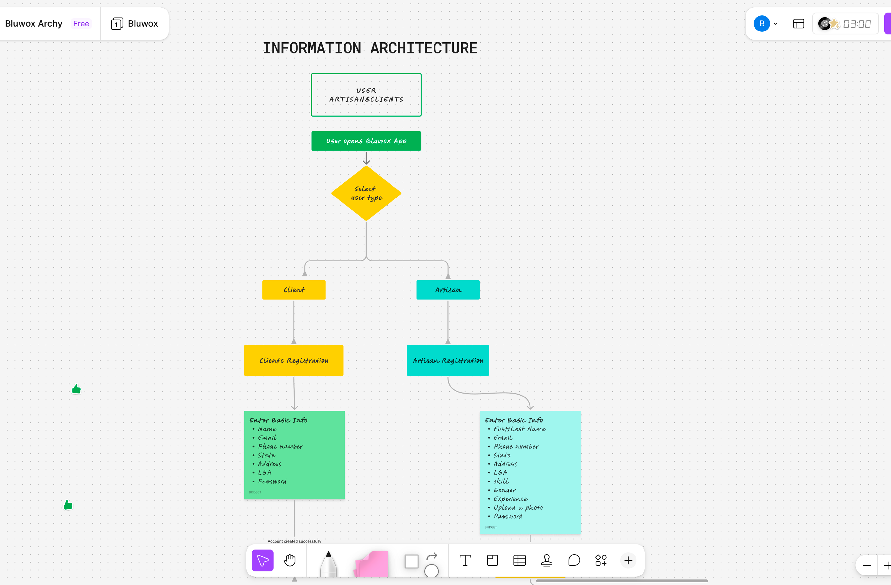
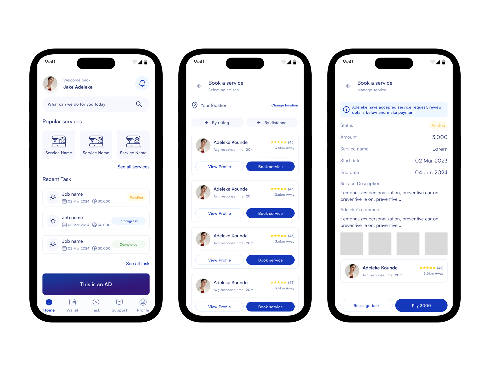

Bluwox

Bluwox is an all-in-one platform connecting users with local artisans for home-based tasks like carpentry, plumbing, painting, and custom furniture creation. The platform is designed for trust, convenience, and skill matching — giving artisans access to consistent jobs while helping users quickly find reliable professionals.
Finding skilled and reliable artisans in Nigeria is challenging. Users face issues like:
- Difficulty locating qualified artisans
- Uncertainty about reliability and quality
- Time wasted managing job requests
Artisans also face challenges:
- Difficulty getting consistent jobs
- Poor visibility to the right customers
A digital platform that bridges users and artisans, improving trust, efficiency, and access to skilled labor.
The final design focused on creating a user-friendly, structured, and visually appealing platform. Key features include:
- Verified artisan profiles with ratings and past work
- Request and quote flow for booking a service
- in-app messaging between client and artisan
- Payment is held until the service is completed
Research
I set out to understand both sides of the platform — the clients hiring for services and the artisans offering them. Through interviews and conversations, I explored their behaviors, frustrations, and expectations. Here are the key insights I uncovered during my research.

User Persona
From my research, I created key user personas that reflect the needs, goals, and frustrations of both clients and artisans. These personas helped guide my design decisions and kept the focus on solving the right problems.


User Flow
After defining the user personas, I mapped out the key user flows to understand how clients and artisans would move through the platform — from an artisan booking and completing a service request, to a client booking a plumber.


Information Architecture
After mapping the user flows, I organized the app structure so everything feels clear and easy to use. I grouped related features together for both clients and artisans to make navigation simple and reduce confusion before moving into wireframes.

Wireframe — Low Fidelity Exploration
To quickly explore multiple layout options and user flows, I started with paper sketches. This helped me iterate fast, test ideas without bias from visuals, and focus on structure, hierarchy, and flow before moving into digital wireframes.

High Fidelity Walkthrough
After figuring out the structure and flows in my low-fidelity sketches, I moved into high fidelity to bring everything to life. At this stage, I focused on making the experience clear, consistent, and easy to use for both artisans and clients — this is where the full Bluwox experience really started to feel real.
Client Onboarding Flow

Dashboard, Searching & Hiring Searching & Hiring

Job Completion & Review

The final design gave users a simple way to discover, compare, and hire trusted artisans from one platform instead of relying on referrals. It also provided artisans with a dedicated space to showcase their work, build credibility, and connect with potential clients.
Designing Bluwox taught me that creating a great user experience is only one part
of building a successful marketplace product. One of the biggest challenges was onboarding enough
artisans and encouraging users to trust and adopt a new platform. I learned that marketplace
products take time to grow, and that consistent onboarding, user education, and marketing
are just as important as the product itself.
This experience reinforced the importance of designing with both business goals and user needs in mind.